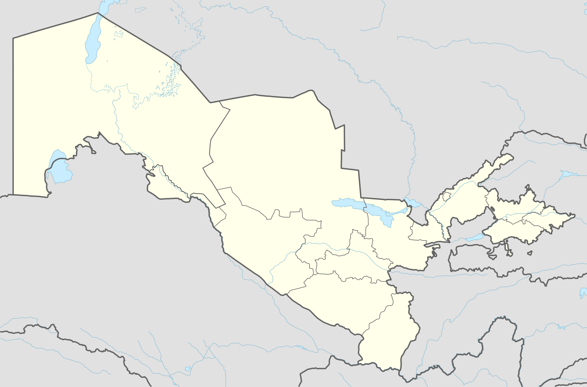
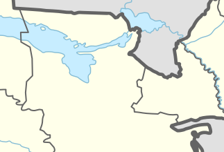
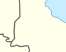
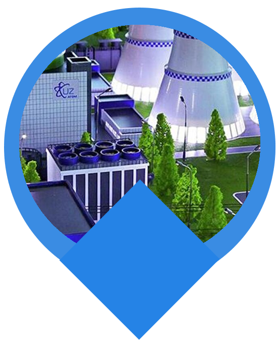
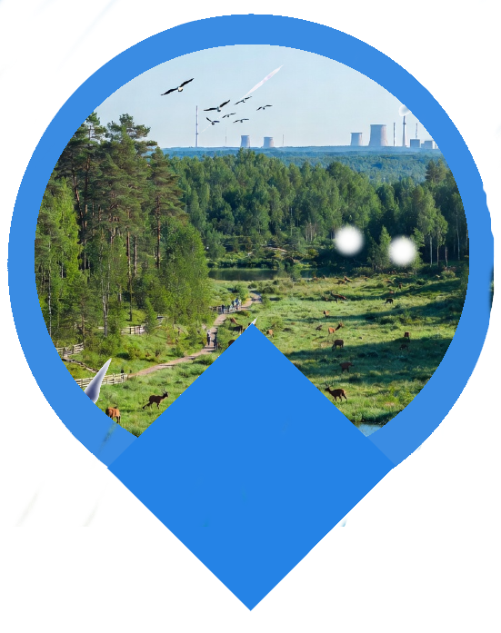
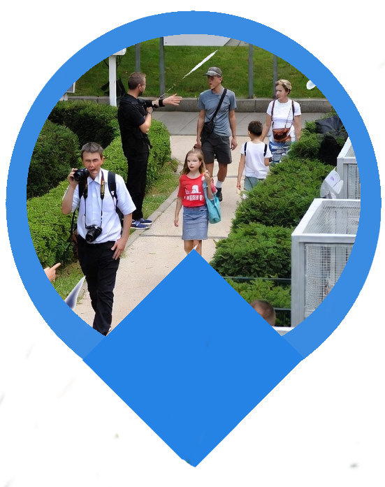
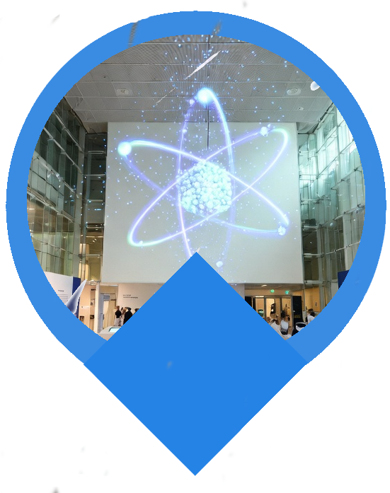

ИНФО
Узбекистан — динамично развивающаяся страна с одной из самых быстрорастущих экономик в Центральной Азии (рост ВВП свыше 5-7% в год). Страна активно модернизирует экономику, цифровизирует сектора, улучшает суверенные кредитные рейтинги (до «BB» к 2025 году) и входит в число перспективных стран с быстроразвивающимися рынками.
Узбекистан... (нажмите)
Узбекистан активно развивает ядерные технологии в сотрудничестве с Россией, начав в 2025-2026 годах строительство первой в Центральной Азии АЭС в Джизакской области. Проект включает АЭС малой мощности (АСММ) с реакторами РИТМ-200Н и блоки большой мощности (ВВЭР-1000), что обеспечит страну чистой энергией на 100 лет и позволит экономить природный газ.
А рядом с ней на территории...
На территории можно наблюдать за растениями и животными, что демонстрирует возможность их нормального существования.
Также заповедник может использоваться для экскурсий и образовательных программ.
Таким образом, он поможет разрушить стереотипы и показать реальное взаимодействие природы и технологий.
Прогулочные тропы в атомном городе активно развиваются как часть индустриального и научного туризма. Они включают пешеходные маршруты по знаковым местам, благоустроенные набережные, парки с зонами отдыха и тематические экскурсии, сочетающие экологию и историю атомной отрасли.
Важнейшими источниками знаний являются музеи. В УзБекистане ежегодно растет интерес и поощеряется культурное развитие со стороны государства.
Музей Атома - это именно такой проект развития образовательного и культурного центра, объединяющий народ и науку, вдохновляющий молодое поколение к новым открытиям. Большое количество экспонатов и интерактив не заставит заскучать никого, каждый сможет почувствовать себя настоящим ученым, узнает историю ядерных технологий и заставит восхититься красотой науки.